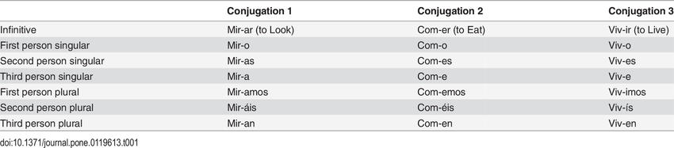
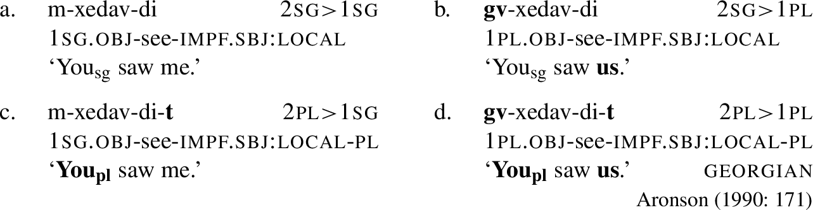
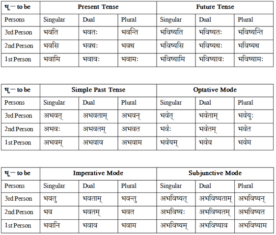

Day 24: Verbs (Person & Number)
NONE of these things have to be encoded in the verb through affixation, but they do have to be marked somehow.

| Spanish | English |
|---|---|
| Como. | ‘I eat.’ |
| Comes. | ‘You eat.’ |
| Comemos. | ‘We eat.’ |

| Korean | English |
|---|---|
| jeo-neun gamnida. | ‘I go.’ |
| chingu-ga gamnida. | ‘My friend goes.’ |
| seonsaengnim-kkeseo gasimnida. | ‘The teacher goes.’ |
| Swahili | English |
|---|---|
| ninasoma | ‘I read’ |
| unasoma | ‘you read’ |
| anasoma | ‘she reads’ |
| tunasoma | ‘we read’ |
| mnasoma | ‘y’all read’ |
| wanasoma | ‘they read’ |
| ninakupenda | ‘I love you’ |
| unanipenda | ‘you love me’ |
| tunawapenda | ‘we love them’ |
| Subject | Tense | Object | Root |
|---|---|---|---|
| ni- ‘I’ | -na- | -soma ‘read’ | |
| u- ‘you’ | -na- | -soma | |
| a- ‘she’ | -na- | -soma | |
| tu- ‘we’ | -na- | -soma | |
| m- ‘y’all’ | -na- | -soma | |
| wa- ‘they’ | -na- | -soma | |
| ni- ‘I’ | -na- | -ku- ‘you’ | -penda ‘love’ |
| u- ‘you’ | -na- | -ni- ‘me’ | -penda |
| tu- ‘we’ | -na- | -wa- ‘them’ | -penda |
| sg. | du. | pl. | |
|---|---|---|---|
| 1 | kɤ | kuu | kaa |
| 2 | ku | kuu | kwa |
| 3 ‘metra’ | o | ow | oa |
| 3 ‘animal’ | ʀɤ | ʀuu | ʀaa |
| 3 ‘plant’ | sø | suu | saa |
| 3 ‘it’ | ta | taw | taa |
| Mɤɧøɴ | English |
|---|---|
| kɤʛu | ‘I drink.’ |
| kuʛu | ‘You drink.’ |
| oʛu | ‘It (metra) drinks.’ |
| kɤtaʛu | ‘I drink it.’ |
| kutaʛu | ‘You drink it.’ |
| otaʛu | ‘It drinks it.’ |
| Naq’anir | English |
|---|---|
| hu hût sasa. | ‘The man speaks.’ |
| p’ir sasatâ. | ‘The Board speaks.’ (respectfully) |
| tâl kíʂtâ nã. | ‘The Lord sees us.’ |
| málʈʂiq sasatâ. | ‘His Highness Malchekk speaks.’ (mocking) |
| Spanish | English |
|---|---|
| como | ‘I eat’ |
| comes | ‘you eat’ |
| come | ‘she eats’ |
| comemos | ‘we eat’ |
| coméis | ‘y’all eat’ |
| comen | ‘they eat’ |

| sg. | du. | pl. | |
|---|---|---|---|
| 1 | kɤ | kɤɠu | kɤka |
| 2 | ku | kuɠu | kuka |
| 3 ‘metra’ | o | oɠu | oka |
| 3 ‘animal’ | ʀɤ | ʀɤɠu | ʀɤka |
| 3 ‘plant’ | sø | søɠu | søka |
| 3 ‘it’ | ta | taɠu | taka |
| du. pronoun | du. marker | pl. pronoun | pl. marker | |
|---|---|---|---|---|
| 1 | kɤɠu | kuu | kɤka | kaa |
| 2 | kuɠu | kuu | kuka | kwa |
| 3 ‘metra’ | oɠu | ow | oka | oa |
| 3 ‘animal’ | ʀɤɠu | ʀuu | ʀɤka | ʀaa |
| 3 ‘plant’ | søɠu | suu | søka | saa |
| 3 ‘it’ | taɠu | taw | taka | taa |
| Naq’anir | English |
|---|---|
| hu hût lí. | ‘The man is good.’ |
| hûtĩ lí. | ‘Men are good.’ |
| Naq’anir | English |
|---|---|
| na lu. | ? |
| ʂi sasa. | ? |
| hu hût lulu. | ? |
| nã huʂ. | ? |
| ʈʂã sasa. | ? |
| Naq’anir | Gloss | English |
|---|---|---|
| na lu. | I go | ‘I go.’ |
| ʂi sasa. | you talk | ‘You talk.’ |
| hu hût lulu. | the.HUM man walk | ‘The man walks.’ |
| nã huʂ. | I.PL leave | ‘We leave.’ |
| ʈʂã sasa. | it.MACH.PL talk | ‘They (machines) talk.’ |
| Naq’anir | English |
|---|---|
| na kíʂ ʂi. | ? |
| ʂi kíʂ na. | ? |
| málʈʂiq kíʂ sit’íki. | ? |
| ʈʂa ʈʂáʈʂ wǎ nã. | ? |
| na pa pâ. | ? |
| Naq’anir | Gloss | English |
|---|---|---|
| na kíʂ ʂi. | I see you | ‘I see you.’ |
| ʂi kíʂ na. | you see I | ‘You see me.’ |
| málʈʂiq kíʂ sit’íki. | Malchekk see Sidiki | ‘Malchekk sees Sidiki.’ |
| ʈʂa ʈʂáʈʂ wǎ nã. | the.MACH robot help I.PL | ‘The robot helps us.’ |
| na pa pâ. | I give gift | ‘I give a gift.’ |
| English | Naq’anir |
|---|---|
| ‘You (sg.) go.’ | ? |
| ‘Y’all walk.’ | ? |
| ‘We see the robot.’ | ? |
| ‘They (human) help me.’ | ? |
| ‘The Board sees us.’ (respectfully) | ? |
| English | Naq’anir | Gloss |
|---|---|---|
| ‘You (sg.) go.’ | ʂi lu. | you go |
| ‘Y’all walk.’ | ʂĩ lulu. | you.PL walk |
| ‘We see the robot.’ | nã kíʂ ʈʂa ʈʂáʈʂ. | I.PL see the.MACH robot |
| ‘They (human) help me.’ | hũ wǎ na. | he/she.PL help I |
| ‘The Board sees us.’ (respectfully) | p’ir kíʂ-tâ nã. | Board see-HON I.PL |
| sg. | du. | pl. | |
|---|---|---|---|
| 1 | |||
| 2 | |||
| 3 |